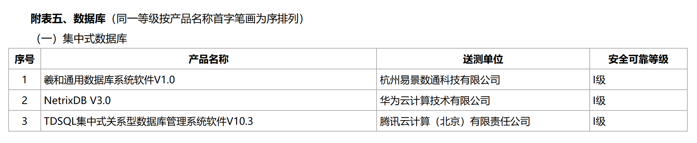
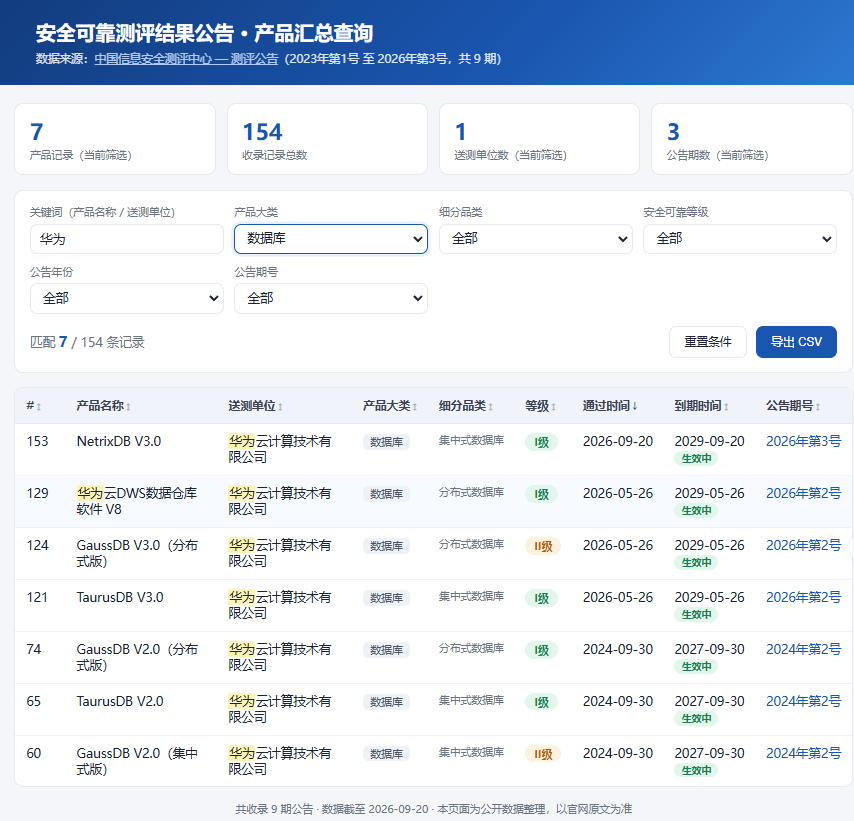
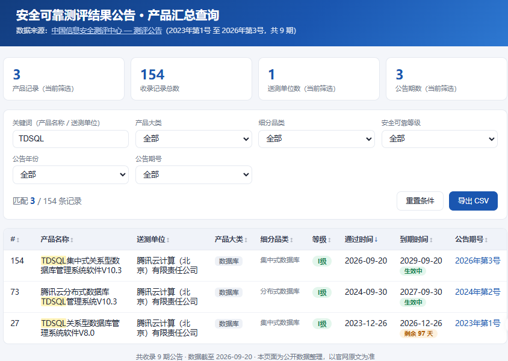
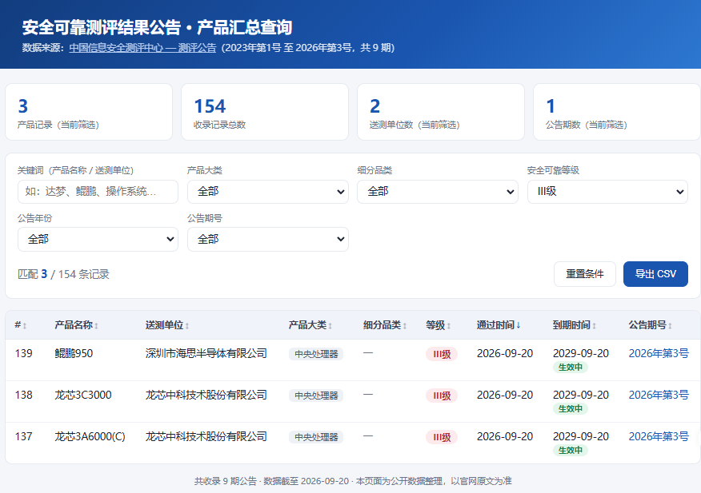
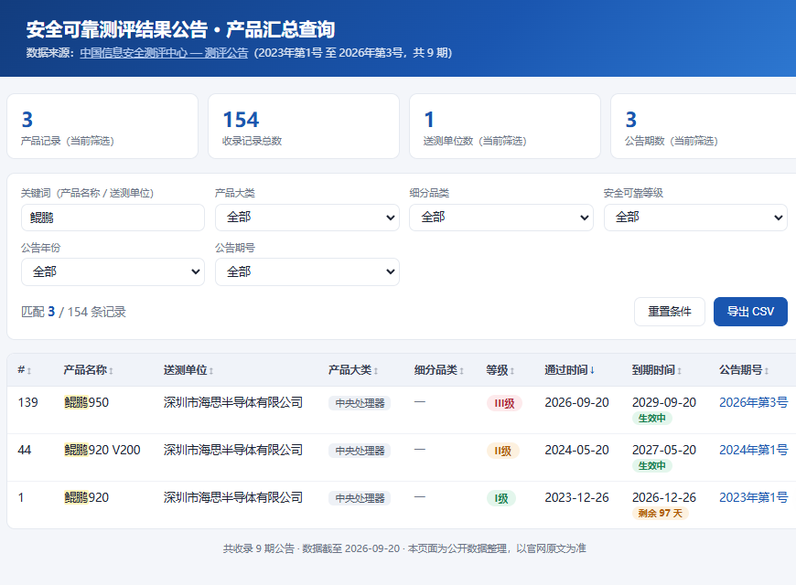
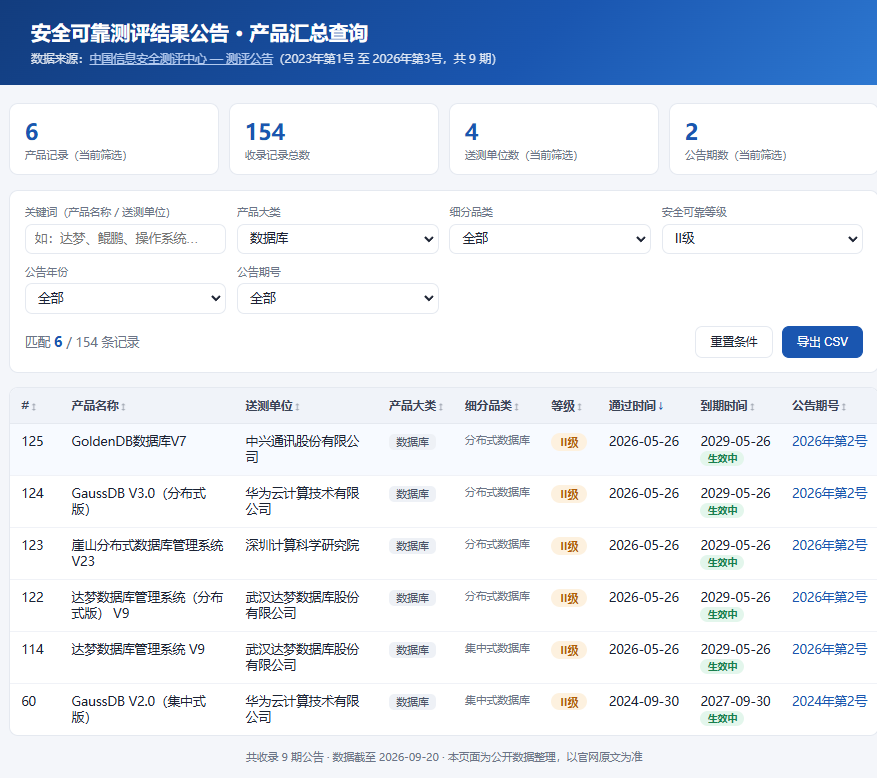

号外！又有新的国产数据库通过国家安全可靠测评了
20260920-安全可靠测评结果公告（2026年第3号）: https://www.itsec.gov.cn/aqkkcp/cpgg/202609/t20260920_275291.html
从2026年第2号的一批测评通过结果就可以看出，国产数据库想要通过这个测评变得比开始的时候更加简单了，但是由于存在有I级II级这样的级别，所以就算在通过列表里，仍然还会有比较:
有更好的II级为什么还要选I级?
而这次的 2026年第3号 ，新增的国产数据库都是 I 级，本来也没什么可说的了，但仔细看了下通过的产品，有些东西也可以说道说道：

HALO
先说这个易景的羲和吧，就是HALO数据库（和一堆产品同名，我用的博客系统也叫Halo,AMD有一款芯片也叫Halo，漫步者有款音响也叫halo），这家公司成立于2021年，也就是国产数据库这几年这波风口开始之后。公司成立开始就发布了基于Postgresql修改的HALO数据库,早期投入的宣发挺多，当时有很多KOL写HALO的文章，但实际在国产数据库厮杀的最前线(PoC)上，几乎看不到这家公司。
这家公司还开源了一个openHalo的数据库，"亮点"是支持了mysql的客户端协议，但实际上PG上的MYSQL协议在社区早就有人做了，只是没有最终合入，但其他闭源的PG内核支持mysql客户端的多得是。另外openGauss的mysql协议也是早早就开源了,甚至把SQL引擎和存储引擎都做了相应的适配，openHalo做的mysql功能点是没有openGauss多的。
这家公司撑到了安可大放水，也是不容易。或许也正是他们不正面和头部厂商厮杀，节约了大量成本，一直蛰伏，就为等一个时机，只要在2027年之前过了安可，就是"胜利"。
但有了门票之后，在目前国产数据库这个发展形势下，后续仍然还要持续地烧钱。
截止到今日(20260920)，该数据库版本号一直停留在1.0 ，2.0还未发布。
NetrixDB
华为最新出的这款数据库，网上根本搜不到任何资料，甚至版本号都已经到3.0了。截止到目前，全网搜索"NetrixDB"的信息源均指向今日发布的《安全可靠测评结果公告（2026年第3号）》
但是安可测评的产品必须满足
http://www.nsstec.org.cn/tzgg/354470.shtml
1.送测产品应面向市场公开销售或已投入实际使用；
现在想想，这句话有歧义 ，
- 面向市场 + (公开销售 or 投入实际使用)
- 面向市场公开销售 or 投入实际使用
目前来看是没有面向市场了，如果是合规通过，那么只能解释为 "内部投入使用"，这就好说了。等后面看看华为会不会有发布什么官方咨询吧。
不过华为的数据库产品真多哇，过了安可的都有7款了

TDSQL
TDSQL就是正常的版本升级续期，可以看到V8.0只剩3个月，集中式的测评结果就要到期了，所以这次10.3集中式续得很及时。

但注意一下，同样是10.3版本的分布式，在2024年9月30号就通过了测评，而集中式到了2026年9月20号才通过，期间发生了什么，不得而知。也可能两个内核分支不一样，只是版本号设计成一样了呢。而且TDSQL集中式10.3在网上同样搜不到资料。
出现了第一批III级的产品
这批的III级不是数据库的，是CPU的

鲲鹏950出现了，所以自然会想着去看下鲲鹏920

最早的一批920年底到期了，服务器换不换？这批服务器5年都还没用到......
回顾下往期所有的II级数据库吧

- 2个GaussDB ，集中式 + 分布式
- 2个达梦 ，集中式 + 分布式
- 1个GoldenDB 分布式
- 1个崖山 分布式
安可测评结果汇总查询页面
或许有人注意到了我上面截图的几个表格，这是我用AI生成的一个网页，已经挂载到了
https://www.darkathena.top/gclist.html ,单html的（可以保存到本地使用），支持各种过滤查询条件，支持导出CSV，不仅包含数据库的，其他像服务器、操作系统、芯片的都放进去了。
附：本期安可产品一览

注：部分公司的网络策略可能屏蔽了我的网站，可以改用手机流量访问。